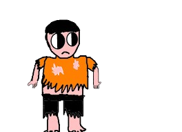

MATHEUS
Matheus é um morador de rua de Pederneiras, sua sobrevivencia se baseia em consumir larvas de coqueiro que ele encontra na rua, doe para ele pela chave:
(14) 98819-7087

(imagem real de Matheus)

Matheus é um morador de rua de Pederneiras, sua sobrevivencia se baseia em consumir larvas de coqueiro que ele encontra na rua, doe para ele pela chave:
(imagem real de Matheus)
Guilherme é um indigena morador de Pederneiras, ele vive em uma aldeia simples junto com Breno Henrique Severino onde os dois vivem de caça de javaporco, doe para ele pela chave:
(imagem real de Guilherme, Breno e Matheus caçando)